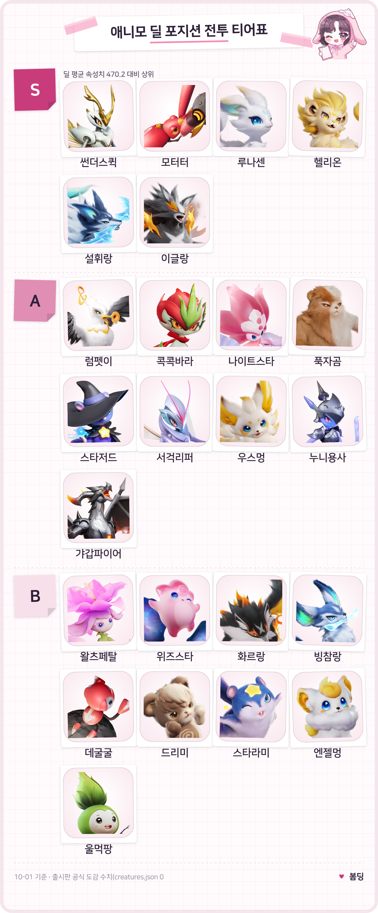
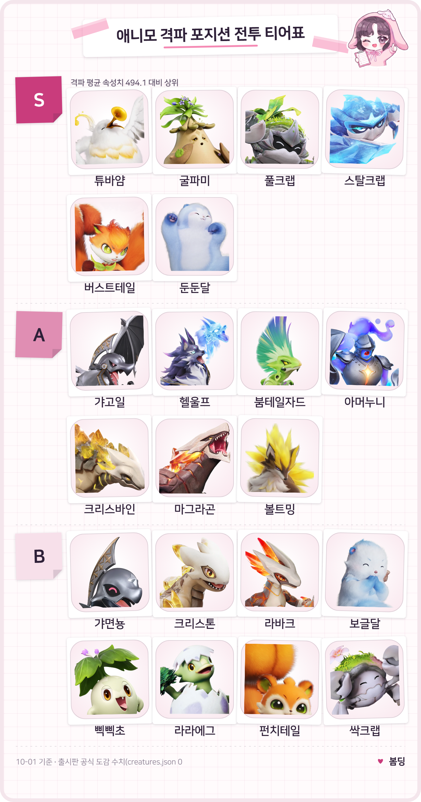
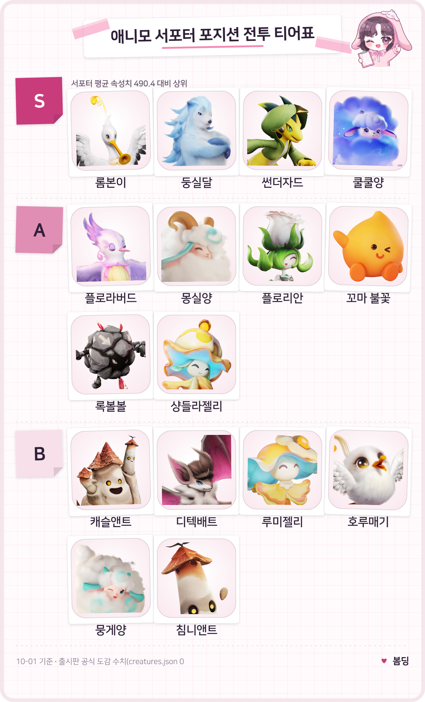

애니모 전투 티어표 재정리, 정식 출시판 도감 수치로 본 포지션별 추천
애니모 도감을 요 며칠 들여다보다 보니, 자연스럽게 9월 18일에 올렸던 애니모 전투 티어표 정리 글이 눈에 밟히더라고요. 그 글은 공략 사이트 10곳 티어표(CBT·시연 자료가 섞인 것들)를 종합한 거라 지금 보면 애매한 부분이 있었거든요. 9월 16일 PC·콘솔 정식 출시(모바일은 9월 23일, 공식 발표 기준) 이후 도감도 갱신됐으니, 이번엔 출시판 공식 수치로 포지션별 순위를 다시 매겨봤습니다.
결론부터 보면 딜은 썬더스퀵, 격파는 튜바얌, 서포터는 롬본이, 치유는 아이시우스, 에너지 재생은 위치햇그라스가 수치상 1위예요. 다만 딜은 수치 1위라도 숙련도를 탑니다. 격파·서포터는 특성 조건부라 체감이 갈릴 수 있으니, 근거는 아래에서 포지션별로 하나씩 풀어볼게요.
이번 수치, 어디서 가져온 건가요?
이번 수치는 공식 위키 도감 86종 전수 데이터(2026년 9월 20일 수집) 기준으로만 말씀드릴게요. 9월 29일·30일 패치 2건은 버그 수정·꾸미기 아이템뿐이라 전투 스탯은 그대로입니다(스팀 공식 패치노트 기준).
단, 이 수치는 전부 도감 기준값이에요. 레벨·잠재력·공명 성급·장착 아이템이 반영되기 전 맨몸 능력치라, 실제 체감과는 다를 수 있어요. 스탯 용어가 헷갈리면 애니모 스탯 보는 법 글을 먼저 보시면 좋아요. 출시 2주차라 아직 메타가 완전히 굳지 않았고, 패치마다 순위가 조금씩 바뀔 수 있다는 점도 감안해주세요.
숫자만 보고 줄 세우면 안 되는 이유
포지션 5종(딜·치유·서포터·격파·에너지 재생)을 합쳐 속성치 총합으로만 순위를 매기면 상위 10마리 중 9마리가 격파예요. 격파는 종수도 많고(26종) 합계 상한이 높은 개체(550 상한 4종)가 몰려 있어서 그런 거라, 합계로 줄 세우면 안 됩니다. 전체 86종이 포지션 5종으로 나뉘는데, 이번 글은 포지션별로 따로 비교했어요.
딜 포지션, 수치 1위가 꼭 제일 센 건 아니더라고요
딜 포지션(29종 중 S 6종·A 9종) 수치 1위는 전기 속성 썬더스퀵인데, 연참 3회마다 마무리 회전 베기 피해가 100% 붙는 콤보형이라 숙련도에 따라 체감 피해가 갈려요. 2위 모터터는 에너지를 쌓아야 피해가 40% 붙는 선충전형이라 중반 이후에 더 세집니다.

출처: 공식 위키 도감(wiki.aniimo.com) 2026-09-20 수집 기준
3위 루나센·4위 헬리온은 유년기 단계인데도 S급(514)이라, 진화 걱정 없이 바로 범용 딜러로 쓸 수 있어요. 상성에서 밀려도 피해가 30% 붙는 특성까지 더해져서 활용도가 높거든요. 반대로 설휘랑·이글랑은 성숙기라 투자가 필요하고, 둘 다 조건이 맞아야 효율이 나는 특성이라 범용성은 떨어집니다.
격파는 숫자보다 '무력화 효율'을 더 봐야 해요
격파 포지션(26종 중 S 6종·A 7종)은 평균 무력화 수치가 딜의 거의 두 배라, 피해량보다 무력화 효율로 보는 자리예요. 1위 튜바얌은 무력화 성공 시 파티 전체 체력 소모를 30% 줄여주는 특성이라 개인 수치만 보면 가치가 안 보입니다.

출처: 공식 위키 도감(wiki.aniimo.com) 2026-09-20 수집 기준
2위 굴파미는 소환수 타입이라 HP 투자량에 따라 성능이 갈리고, 4위 스탈크랩은 얼음 디버프를 쌓아야 효율이 붙는 지속전형이에요. 6위 둔둔달은 특정 계열이 있어야 효율이 오르는 조합 의존형입니다. 격파 상위권엔 빛 속성이 한 종도 없다는 점도 참고하시면 좋아요.
서포터는 조합을 타는 애들이 많아요
서포터(19종 중 S 4종·A 6종) 상위권은 특정 계열·성별 조합이 맞아야 진가가 나와요. 1위 롬본이는 교체 시 '호루매기 계열'에게만 에너지를 돌려주는 특성이라 그 계열이 없으면 사실상 죽은 특성이 됩니다.

출처: 공식 위키 도감(wiki.aniimo.com) 2026-09-20 수집 기준
2위 둥실달도 이성 애니모의 물 원소 강화를 16% 올려주는 성별+속성 조건부고, 3위 썬더자드는 등장 직후 5초 안 첫 스킬이 무소모라 교체 전술에 잘 맞아요. 지금 파티 구성이랑 맞는지부터 확인해보시는 걸 추천드려요.
치유는 딱 5종, 숫자로 그대로 보여드릴게요
치유는 86종 중 5종뿐이라 등급을 매기기보다 수치를 그대로 보는 게 정확해요. 포지션 평균 속성치는 477.6입니다.
| 순위 | 이름 | 원소 | 단계 | HP | 무력화 | 공격 | 마법방어 | 물리방어 | 에너지회복 | 속성치 합 |
|---|---|---|---|---|---|---|---|---|---|---|
| 1 | 아이시우스 | 물·얼음 | 성숙기 | 120 | 50 | 95 | 110 | 72 | 88 | 535 |
| 2 | 판타쵸 | 바람 | 성장기 | 110 | 50 | 98 | 85 | 85 | 104 | 532 |
| 3 | 장꾸모리 | 물 | 성장기 | 109 | 50 | 85 | 98 | 66 | 74 | 482 |
| 4 | 반짝쵸 | 바람 | 유년기 | 94 | 41 | 81 | 68 | 68 | 85 | 437 |
| 5 | 연댕모리 | 물 | 유년기 | 80 | 50 | 70 | 76 | 66 | 60 | 402 |
1위 아이시우스만 성숙기라 투자가 필요하고, 2·3위 판타쵸·장꾸모리는 성장기라 바로 쓸 수 있어요. 표본이 작으니 참고용으로만 보면 된답니다.
에너지 재생도 7종, 투자 없이 바로 쓰는 애들부터
에너지 재생 7종 중 1·2위 위치햇그라스·폼폼버드는 둘 다 성장기라 추가 진화 없이 바로 최상위권이에요. 평균 속성치는 509.4입니다.
| 순위 | 이름 | 원소 | 단계 | HP | 무력화 | 공격 | 마법방어 | 물리방어 | 에너지회복 | 속성치 합 |
|---|---|---|---|---|---|---|---|---|---|---|
| 1 | 위치햇그라스 | 어둠·풀 | 성장기 | 115 | 50 | 88 | 90 | 84 | 115 | 542 |
| 2 | 폼폼버드 | 물 | 성장기 | 120 | 50 | 90 | 90 | 80 | 110 | 540 |
| 3 | 베서스 | 전기 | 성숙기 | 88 | 90 | 92 | 75 | 75 | 118 | 538 |
| 4 | 연잎룡 | 풀·물 | 성숙기 | 120 | 50 | 95 | 82 | 82 | 106 | 535 |
| 5 | 일렁깨비 | 불 | 성장기 | 80 | 50 | 113 | 89 | 70 | 115 | 517 |
| 6 | 버블버드 | 물 | 유년기 | 102 | 44 | 76 | 76 | 68 | 93 | 459 |
| 7 | 도깨불 | 불 | 유년기 | 69 | 41 | 100 | 67 | 60 | 98 | 435 |
속성치가 435~542까지 넓게 퍼져 있어요. 3·4위 베서스·연잎룡은 성숙기라 투자가 필요하니, 급하면 위치햇그라스·폼폼버드부터 챙기세요.
4마리로 파티 짜면 이렇게 섞어보세요
애니모 전투는 4마리가 기본이고(파티 편성 상한 기준), 역할을 고루 섞는 게 안정적이에요. 격파 상위권엔 빛이, 서포터 상위권엔 얼음·빛이 없다는 점도 같이 챙겨두면 좋겠네요.
| 구성 | 딜 | 격파 | 서포터 / 치유 | 에너지 재생 |
|---|---|---|---|---|
| 밸런스형 | 루나센(빛) | 스탈크랩(얼음) | 롬본이(바람) | 위치햇그라스(어둠·풀) |
| 회복중심형 | 이글랑(불) | 튜바얌(바람) | 아이시우스(물·얼음) | 폼폼버드(물) |
밸런스형은 격파·서포터에 비는 얼음·빛을 딜 쪽에서 메우고, 회복중심형은 치유를 넣어 장기전용으로 짰어요. 딜 상위권은 어둠이 3종으로 많으니 상대가 어둠이면 바꿔주세요. 이 조합도 도감 기준값이라 실제 체감은 달라질 수 있어요.
초반에 바로 쓸 애들, 나중에 갈아탈 애들
포지션마다 '바로 투입' 쪽과 '성숙기까지 키워야 하는' 쪽이 갈려요. 전체 육성 우선순위는 포지션 5종 뭐부터 키워야 하나 글도 참고해보시면 도움이 될 거예요.
| 포지션 | 초반에 바로 쓸 쪽 | 나중에 갈아탈 쪽 |
|---|---|---|
| 딜 | 루나센·헬리온 | 설휘랑·이글랑 |
| 격파 | 굴파미·스탈크랩 | 튜바얌·둔둔달 |
| 서포터 | 썬더자드 | 롬본이·둥실달 |
| 치유 | 판타쵸·장꾸모리 | 아이시우스 |
| 에너지 재생 | 위치햇그라스·폼폼버드 | 베서스·연잎룡 |
격파는 S티어 6종 중 4종이 이미 성장기에서 1위권이라 초반부터 바로 최상위권이에요. 서포터는 급하면 3위 썬더자드부터, 치유는 2·3위부터 챙기는 것도 방법입니다.
자주 묻는 질문
Q. 공식 도감에 등록된 애니모는 몇 종인가요?
이 글 기준으로는 공식 위키 도감 86종이에요. 패치마다 신규 개체가 추가될 수 있어요.
Q. 레벨 올리면 순위 바뀌나요?
네, 이 수치는 레벨·잠재력·공명·장비 전 도감 기준값이라 실제론 달라질 수 있어요.
Q. 천휘 형태도 스탯 오르나요?
이 글에선 안 다뤘어요. 공식 도감에 천휘 형태만의 별도 스탯이 없어 확인이 안 돼요.
Q. 포지션마다 등급 기준이 다른가요?
네, 딜·격파·서포터는 S·A·B로, 치유·에너지 재생은 종수가 적어 수치만 적었어요.
Q. 파티는 꼭 4마리 채워야 하나요?
최대 4마리까지 편성할 수 있고, 네 칸을 다 채우는 쪽이 더 안정적이에요.
애니모 전투 티어표, 포지션별로 정리해봤는데요. 도감 수치는 출발점일 뿐 스킬·특성·원소 상성까지 봐야 진짜 순위가 보여요. 지금 갖고 있는 애니모부터 이 기준으로 맞춰보세요.
✔ 애니모 같이 보기 좋은 내용
· 애니모 전투 티어표 정리, 1티어 애니모 추천까지 짚어봤어요
· 애니모 포지션 5종 뭐부터 키워야 하나, 초반 육성 우선순위 잡는 법
· 애니모 스탯 보는 법, 브레이크·리젠 뜻과 포지션(역할군) 5종 정리
참고한 곳
· 애니모 공식 홈페이지
· 애니모 공식 위키 도감